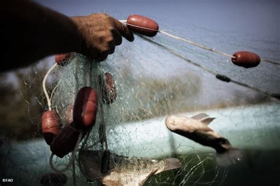
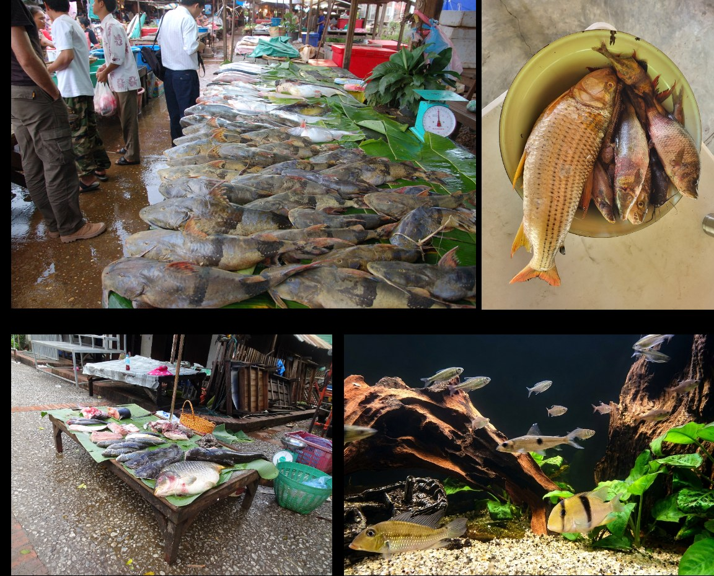

The objective of this project is to measure the functional traits of species used by humans — including commercially exploited fish and hunted vertebrates — in order to better assess and inform conservation policies.
This topic is developed by Pierre Bouchet (PhD Student, CRBE, 2024–2027): Diversité fonctionnelle des vertébrés et utilisation par l'homme : liens entre traits fonctionnels, utilisation anthropique et crise de biodiversité.

Combining morphological traits of 8,970 freshwater fish species with their human uses, we show that the 2,334 species used by humans (26%) span 45% of the global morphospace, that fisheries, aquaculture, game fishing and the aquarium trade each target distinct body plans, and that aquaculture and game fishing favour morphologically original species. Losing the threatened species among them would erode freshwater fish morphological diversity about four times more than random extinctions.